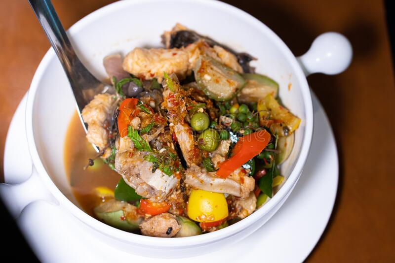

Cat Fish Peppersoup

Description
Well, catfish is the most popular fish in Nigeria partly because it can
easily be domesticated and partly because it tastes nice in soups. In
popular Nigerian bars, catfish are stocked in tanks or large bowls alive.
As a customer, you can choose the exact one you want, then they kill and
prepare it for you.So you point it out, they kill and make pepper soup out
of it. Hence, point and kill.
Ingredients
- 1 medium-sized catfish – 1.2KG
- Half cup of sliced onions.
- Scent leaves (a handful).
- Utazi leaves (very little).
- 1 seasoning cube.
- Lion pepper soup spices.
- Teaspoon – (fish seasoning).
- Half cup of ground crayfish.
- 1 teaspoon – Paprika powder
- Fresh pepper
- Salt to taste.
Steps
-
We start by washing the fishes thoroughly, most people fail to do this
properly. Normally, the fish is cut in the market by the seller to
serve-able sizes so just transfer into a bowl and soak with hot water at
80 – 90 degree Celsius, very boiled water will end up peeling the skin of
the fish.
- Wash to remove the slimy outer skin completely.
-
Prepare all the necessary ingredients, I had to pound the fresh red pepper
and half cup of crayfish together with a mortar and pestle. Also slice the
utazi leaves, onions, scent leaves and set aside in bowls.
-
Transfer the washed catfish into the cooking pot, as I advised above, it
is better to use a small pot so the fish parts are very close to each
other, this will allow the proper incorporation of the ingredients and
help you make a very delicious point and kill pepper soup.
-
I think we are done with the hard part, fishes take about ten to fifteen
minutes to cook, that is just the catfish. Electric fish and a few other
fish found in Nigeria take just about five minutes to prepare.
-
Once you have transferred into a pot, then start with salt, followed by
seasoning cubes, fish seasoning, crayfish, pepper. etc.
- Then add water, about 3 cups.
- Make sure the ingredients are not suspended at the top.
-
Cook 7 minutes then add all the leaves, I also added some paprika powder
because I love ‘dem red catfish pepper soup.